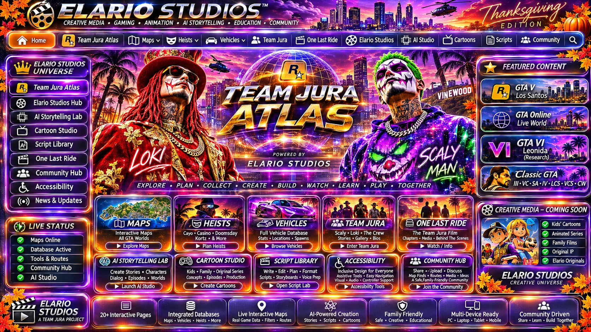

THE CREATIVE STUDIO BEHIND TEAM JURA
ELARIO STUDIOS
Build. Explore. Create. Learn.

Our first chapter: Team Jura Atlas
Interactive gaming maps and community research form the foundation. Original family animation, AI-assisted storytelling, scripts, and learning experiences are future ambitions—not currently launched products.